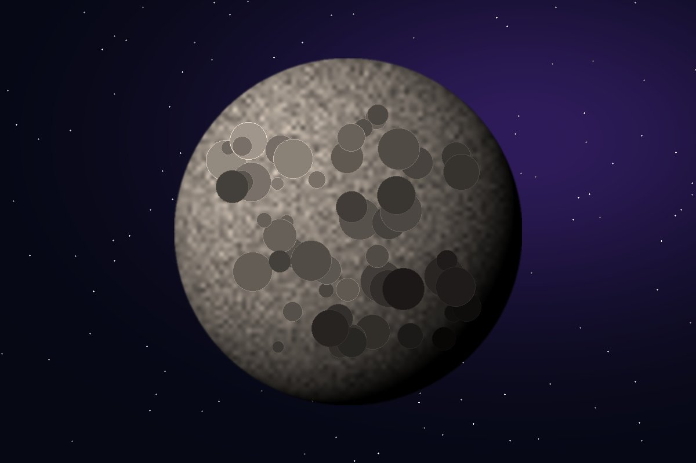
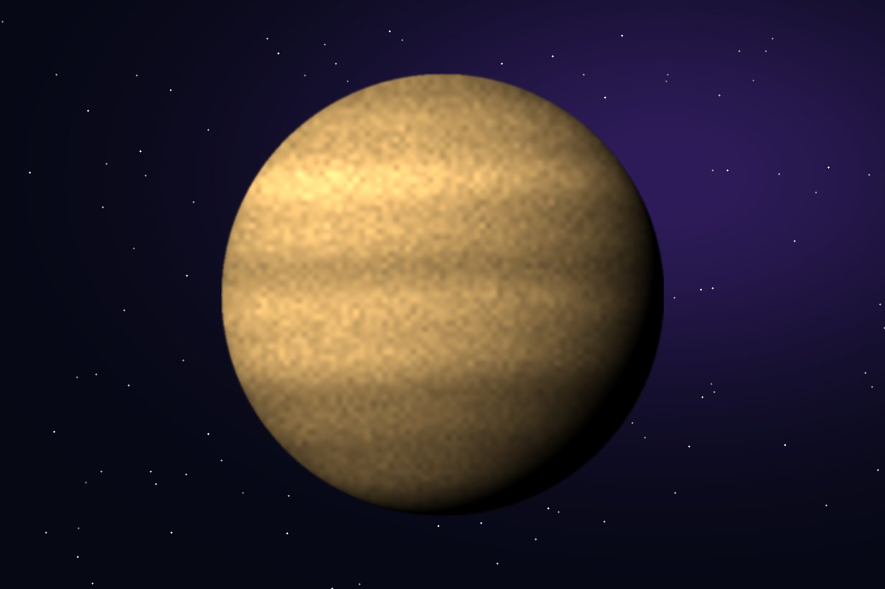
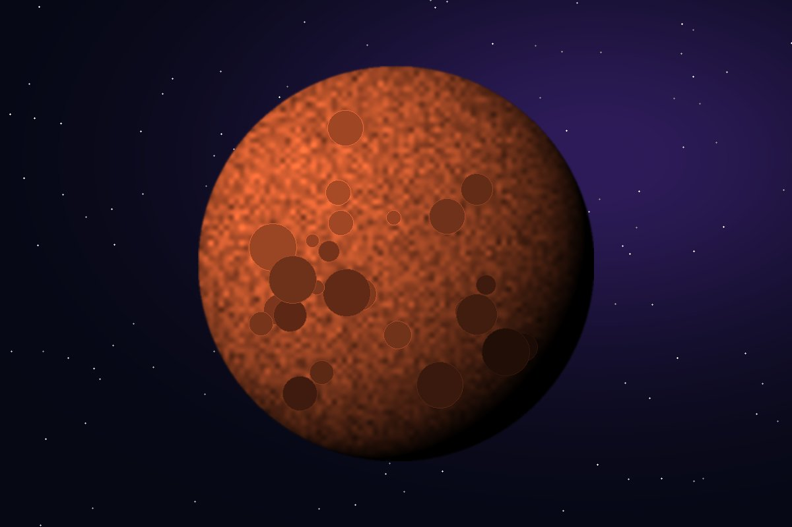

Planetas rocosos
Los cuatro planetas más cercanos al Sol
Los planetas rocosos, también llamados planetas terrestres o telúricos, son Mercurio, Venus, la Tierra y Marte. Se les dice así porque tienen una superficie sólida formada principalmente por rocas y metales, a diferencia de los gigantes gaseosos que están hechos casi por completo de gases.
Son planetas pequeños y densos, con pocas o ninguna luna. Mercurio y Venus no tienen lunas, la Tierra tiene una y Marte tiene dos lunas muy pequeñas llamadas Fobos y Deimos. Además, ninguno de ellos tiene anillos.
Aunque se parecen en su composición, sus condiciones son muy diferentes: Mercurio casi no tiene atmósfera, Venus tiene una atmósfera tan densa que atrapa el calor y lo convierte en el planeta más caliente, y Marte es frío y desértico. La Tierra es el único donde se conoce la existencia de vida.

Mercurio
El más pequeño y el más cercano al Sol. Un año dura solo 88 días.

Venus
El más caliente, con unos 465 °C en su superficie. Gira al revés que los demás.

Tierra
Nuestro hogar. El 71% de su superficie está cubierta de agua.

Marte
El planeta rojo. Tiene el volcán más alto conocido, el Monte Olimpo.